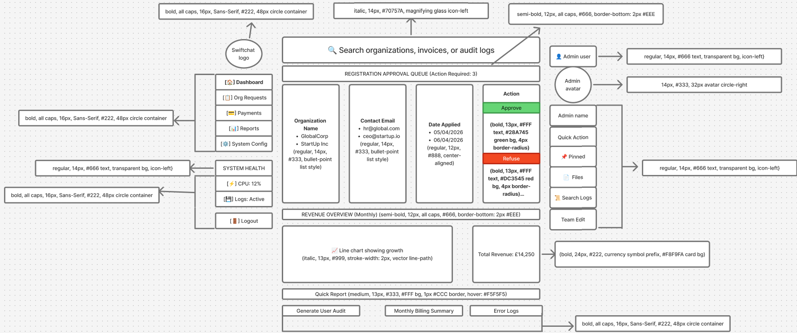
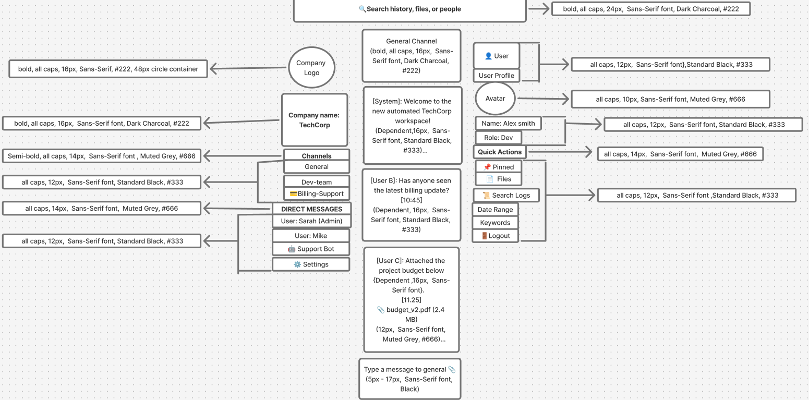

Description: "For this project, I engineered Nottingham SkyRoute Explorer, a console-based C++ search engine designed to process and analyze global airport data for route planning. I built the application to parse complex CSV records into dynamic memory using custom structures and vectors, enabling users to search airports by country code, partial name, or IATA code, as well as add new records and save updates back to disk. To elevate the prototype, I implemented advanced features such as geographic distance calculations using the Haversine formula, radius proximity searches, and elevation data analysis. I focused on delivering a robust, modular codebase built across separate header and source files, featuring strict input validation and safe memory management with pointers to ensure high performance and reliability."
Technologies Used: Programming Language: C++ (Standard C++11 / C++17 features) Standard Library (STL): Vectors (std::vector), Algorithms, Math Functions (sin, cos, atan2, sqrt), String Streams, File I/O (ifstream, ofstream) Concepts & Methodologies: Object-Oriented Programming (OOP), Data Structures (struct, class), Memory Management (Pointers, References, nullptr), Modular Architecture (Header .h and Source .cpp Files) Data & Storage: CSV Parsing, File Handling, Data Persistence User Interface & Input: Command Line Interface (CLI), Stream Error Handling (cin.clear(), cin.ignore()), Defensive Input Validation Algorithms: Haversine Proximity Formula, Dynamic Filtering & Sorting Algorithms University Desktop
View My C++ ProjectExplanation: This project was a major milestone in my development journey as it marked my first large-scale C++ application. Having previously built most of my software projects using C#, transitioning to C++ provided a unique and valuable learning experience. It required me to move away from managed environments and engage directly with low-level concepts—such as manual memory management, explicit pointers, reference passing, and strict input stream handling. Overcoming the steep learning curve of building a fully modular C++ application not only broadened my technical versatility, but it also gave me a much deeper understanding of system performance, resource efficiency, and software architecture under the hood]
Context: I developed this project over the course of a month, working primarily on my personal laptop from my university accommodation while actively utilizing dedicated campus resources. To ensure a structured development process, I leveraged weekly laboratory sessions and quiet study hours in the university library to refine the system architecture, debug core memory features, and test data-loading pipelines. Balancing independent coding outside of class with collaborative lab environments allowed me to systematically design, test, and polish the application within the project's four-week timeline
Description: The testing process for code involves systematically checking a program to ensure it works as expected and is free from errors. This begins with planning, where test cases are created based on the program’s requirements. Developers then perform different types of testing, such as unit testing to verify individual components, integration testing to ensure parts of the system work together, and user acceptance testing to confirm the program meets user needs. During testing, inputs are applied, and outputs are compared against expected results to identify any bugs or issues. Any errors found are fixed, and the code is retested to ensure the problem has been resolved. This process is repeated until the software performs reliably and meets all requirements.
Link to testsExplanation: Testing was a critical phase of development because it ensured the software was reliable, accurate, and resilient under real-world usage. In a C++ project handling custom memory and file operations, systematic testing allowed me to catch memory leaks, fix pointer errors early, and ensure complex calculations like the Haversine formula produced exact results. Rigorous input testing also prevented application crashes when handling invalid user entries, safeguarding data integrity during CSV file reads and writes. Ultimately, thorough testing turned a basic prototype into a stable, dependable application capable of processing real-world data safely.
Context: This testing framework was applied to the Airport Search Engine CLI application built in C++. The program parses large dataset files containing airport coordinates, metadata, and flight paths, allowing users to search, filter by proximity, and insert new records directly into persistent storage.
Description: This document features a 1,500-word academic report on the "Impact of AI-Driven Climate Modelling on Climate Action," accompanied by a Harvard reference list and a personal reflection. The report explores how machine learning enhances predictive accuracy for extreme weather, flood risk, and renewable energy integration compared to traditional numerical models, while addressing critical global disparities and ethical concerns regarding data governance and algorithmic bias in developing nations.
Download ReportExplanation: The purpose of this report is to analyze how artificial intelligence and machine learning are transforming climate science and environmental decision-making. It traces the evolution of climate prediction from traditional physics-based models to modern AI architectures, highlighting real-world benefits like faster early-warning systems, accurate flood and drought forecasting, and better integration of renewable energy into power grids. Additionally, the report examines the legal, ethical, and social challenges surrounding AI deployment—such as data privacy, liability, algorithmic bias, and unequal access between high- and low-income nations—to emphasize the need for transparent, equitable frameworks as these technologies advance.
Context: I created this document in 2025 as part of an academic project that explored the ethical dimensions of modern computing. Choosing artificial intelligence as my core subject, I focused specifically on AI-driven climate modelling to examine how cutting-edge algorithms intersect with technology ethics. The goal was to analyze how AI can enhance global climate action—such as improving early warning systems and renewable energy grid management—while critically addressing the legal, social, and ethical challenges it introduces, including algorithmic bias, data governance, unequal technological access for developing nations, and the environmental footprint of AI systems themselves
Description: As the UI Designer, the design work focused on creating the administration and employee interface views for the SwiftChat system proposal. Built around intuitive navigation, clear layouts, and high usability, the designs were structured to mirror familiar industry-standard platforms—ensuring users of any skill level could effortlessly manage workspaces, communicate, and access features without a learning curve


Explanation: [Explain the design objectives]
Context: [Describe the project or client context]